全部框架
一行是一个框架。默认显示身份、基础数值、评分与注解四组列，其余数值按组收在工具条上，点开即并入表内。
| 武器 | 框架 | 图标 | 示例 | 勇士 | 弹药 | 基础 伤害 | 红血 倍率 | 橙血 倍率 | 精准 倍率 | 最大 弹药 | 弹匣 Perk | 瞄准衰减 射程 | 基础 间隔 | 优化 间隔 | 真实 射速 | 测试 弹匣 | 优化 弹匣 | 基础 填装 | 优化 填装 | 填装 数值 | 基础 射空 | 优化 射空 | 单弹匣 红血 DPS | 最大 红血 DPS | 月靴 红血 DPS | 典型 红血 DPS | 身体 红血 DPS | 典型 橙血 DPS | 单弹匣 首领 DPS | 最大 首领 DPS | 月靴 首领 DPS | 典型 首领 DPS | 红血 总伤 | 首领 总伤 | 红血 单弹药盒 | 首领 单弹药盒 | 最大 弹药拾取 | 清怪 分数 | 首领 分数 | 分级 | 注解 |
|---|---|---|---|---|---|---|---|---|---|---|---|---|---|---|---|---|---|---|---|---|---|---|---|---|---|---|---|---|---|---|---|---|---|---|---|---|---|---|---|---|---|
| 主武器 | |||||||||||||||||||||||||||||||||||||||||
| 自动步枪 | 适配 | 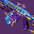 | 主武器 | 27.574 | 2.56 | 1.92 | 1.755 | 26.83% | 25.20 | 0.100 | 600.0 | 52 | 52 | 1.150 | 0.867 | 71 | 5.100 | 5.100 | 706 | 706 | 615 | 587 | 335 | 441 | 276 | 276 | 240 | 229 | ∞ | ∞ | 908 | 276 | B | 综合来看可能是最佳的自动步枪框架，兼顾了自带反屏障与优秀的伤害。 | |||||||
| 高冲击 | 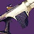 | 主武器 | 41.493 | 2.55 | 1.92 | 1.795 | 25.00% | 35.91 | 0.150 | 398.8 | 40 | 40 | 1.417 | 0.900 | 47 | 5.867 | 5.867 | 704 | 704 | 626 | 582 | 324 | 437 | 276 | 276 | 245 | 228 | ∞ | ∞ | 903 | 276 | B | 射程方面的异类，具备出色的硬直能力；虽射速较低，但伤害仍位列第二梯队顶端。 | ||||||||
| 支援 | 主武器 | 26.778 | 2.54 | 1.90 | 1.403 | 25.00% | 26.20 | 0.100 | 600.0 | 44 | 55 | 1.133 | 0.950 | 70 | 4.300 | 5.400 | 680 | 680 | 589 | 551 | 393 | 412 | 268 | 268 | 232 | 217 | ∞ | ∞ | 862 | 268 | B | 伤害够用，同时具备「提升伤害」与「保障生存」的双重定位优势。 | |||||||||
| 平衡热量 | 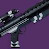 | 主武器 | 39.505 | 2.21 | 1.73 | 1.693 | 12.50% | ? | 0.134 | 449.1 | 63 | 62 | 2.250 | 1.433 | 64/16/20 | 8.283 | 8.133 | 655 | 655 | 567 | 523 | 309 | 409 | 296 | 296 | 256 | 236 | ∞ | ∞ | 829 | 296 | C | 相比「适配」框架是纯粹的下位替代。 | ||||||||
| 精密 | 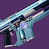 | 主武器 | 34.335 | 2.54 | 1.91 | 1.693 | 24.24% | 29.40 | 0.134 | 448.2 | 32 | 41 | 1.400 | 0.933 | 48 | 4.150 | 5.355 | 652 | 652 | 570 | 504 | 297 | 379 | 256 | 256 | 224 | 198 | ∞ | ∞ | 807 | 256 | C | 伤害逊于「平衡热量」，但自带反屏障。 | ||||||||
| 速射 | 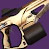 | 主武器 | 23.398 | 2.53 | 1.90 | 1.697 | 26.00% | 24.00 | 0.083 | 720.1 | 50 | 63 | 1.067 | 0.933 | 55 | 4.083 | 5.166 | 709 | 709 | 610 | 574 | 338 | 431 | 281 | 281 | 242 | 227 | ∞ | ∞ | 899 | 281 | C | 伤害扎实，但在同一射程档位下相比「适配」是明显的下位替代。 | ||||||||
| 斥候步枪 | 平衡热量 | 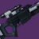 | 主武器 | 71.918 | 2.50 | 1.59 | 1.948 | 32.00% | ? | 0.233 | 257.1 | 25 | 32 | 2.233 | 1.533 | 57/50/40 | 5.600 | 7.233 | 769 | 769 | 655 | 573 | 294 | 366 | 308 | 308 | 263 | 230 | ∞ | ∞ | 763 | 308 | D | 拥有独特的长时间弹匣倾泻能力，但整体伤害并不突出。 | |||||||
| 速射 | 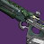 | 主武器 | 60.981 | 2.87 | 1.76 | 1.949 | 17.65% | 67.71 | 0.233 | 257.2 | 20 | 20 | 1.133 | 0.933 | 60 | 4.433 | 4.433 | 749 | 749 | 651 | 628 | 322 | 385 | 261 | 261 | 227 | 219 | ∞ | ∞ | 785 | 261 | D | 有趣的是伤害甚至比高冲击更差，不过差距不大，且有着相同的问题。 | ||||||||
| 高冲击 | 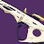 | 主武器 | 96.641 | 2.86 | 1.76 | 2.008 | 28.57% | 83.71 | 0.400 | 150.0 | 17 | 18 | 1.400 | 1.033 | 50 | 6.400 | 6.800 | 692 | 692 | 636 | 603 | 300 | 370 | 242 | 242 | 222 | 211 | ∞ | ∞ | 740 | 242 | E | 斥候步枪通常在近距离交战时舒适度较低，且没有自带反屏障。 | ||||||||
| 轻质 | 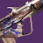 | 主武器 | 73.840 | 2.87 | 1.76 | 1.696 | 26.67% | 72.10 | 0.300 | 200.0 | 18 | 19 | 1.633 | 1.017 | 40 | 5.100 | 5.400 | 706 | 706 | 627 | 566 | 334 | 347 | 246 | 246 | 219 | 197 | ∞ | ∞ | 723 | 246 | E | 伤害平庸，与速射框架差别不明显。 | ||||||||
| 攻击 | 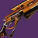 | 主武器 | 136.743 | 2.87 | 1.76 | 1.697 | 33.33% | 78.38 | 0.500 | 120.0 | 15 | 16 | 3.250 | 2.617 | 69 | 7.000 | 7.500 | 784 | 784 | 620 | 574 | 338 | 352 | 273 | 273 | 216 | 200 | ∞ | ∞ | 767 | 273 | F | 伤害平庸，同时换弹机制笨重。 | ||||||||
| 精密 | 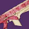 | 主武器 | 75.298 | 2.86 | 1.76 | 1.795 | 25.00% | 75.87 | 0.334 | 179.5 | 19 | 20 | 1.200 | 1.033 | 69 | 6.017 | 6.351 | 645 | 645 | 584 | 567 | 316 | 348 | 225 | 225 | 204 | 198 | ∞ | ∞ | 693 | 225 | F | 传说主手武器框架中最差的伤害。 | ||||||||
| 脉冲步枪 | 微型导弹 | 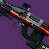 | 特殊 | 793.043 | 3.07 | 2.02 | 1.112 | 14 | 40.00% | ? | 1.130 | 53.1 | 6 | 7 | 1.250 | 1.017 | 35 | 5.650 | 6.780 | 2156 | 2156 | 2187 | 2118 | 1905 | 1394 | 702 | 702 | 712 | 690 | 34101 | 11103 | 14615 | 4758 | 6 | 2485 | 702 | S | 清怪能力达到改变游戏规则的程度，单盒弹药伤害接近爆弹枪两倍，且精准倍率低。 | |||
| 适配 | 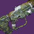 | 主武器 | 38.776 | 2.98 | 1.74 | 1.657 | 29.73% | 34.61 | 0.151 | 397.5 | 36 | 48 | 1.267 | 0.967 | 64 | 5.283 | 7.094 | 765 | 765 | 687 | 634 | 383 | 370 | 257 | 257 | 231 | 213 | ∞ | ∞ | 792 | 257 | C | 比 C 级脉冲步枪伤害略低，但自带反屏障。 | ||||||||
| 动态热量 | 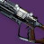 | 主武器 | 39.107 | 2.59 | 1.58 | 1.793 | 8.11% | ? | 0.111 | 540.0 | 37 | 64 | 2.167 | 1.767 | 60/30/40 | 4.000 | 7.000 | 912 | 912 | 740 | 608 | 339 | 370 | 352 | 352 | 285 | 235 | ∞ | ∞ | 853 | 352 | C | 情况与重型点射相同。 | ||||||||
| 重型点射 | 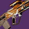 | 主武器 | 51.834 | 2.99 | 1.74 | 1.857 | 44.44% | 37.27 | 0.178 | 336.6 | 24 | 26 | 1.267 | 1.133 | 61 | 4.100 | 4.457 | 871 | 871 | 722 | 694 | 374 | 404 | 291 | 291 | 241 | 232 | ∞ | ∞ | 883 | 291 | C | 本质上就是更差的高冲击自动步枪。 | ||||||||
| 速射 | 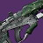 | 主武器 | 29.562 | 2.99 | 1.74 | 1.791 | 33.33% | 31.54 | 0.109 | 550.0 | 45 | 48 | 1.033 | 0.950 | 59 | 4.800 | 5.127 | 810 | 810 | 698 | 682 | 381 | 398 | 271 | 271 | 233 | 228 | ∞ | ∞ | 846 | 271 | C | 情况与重型点射相同。 | ||||||||
| 激进爆弹 | 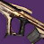 | 主武器 | 32.148 | 2.98 | 1.73 | 1.948 | 40.00% | 37.27 | 0.129 | 466.0 | 52 | 56 | 1.217 | 0.933 | 61 | 6.567 | 7.082 | 745 | 745 | 670 | 640 | 329 | 372 | 250 | 250 | 225 | 215 | ∞ | ∞ | 786 | 250 | D | 情况与重型点射脉冲类似，由于四连发机制，甚至可能更差。 | ||||||||
| 平衡热量 | 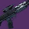 | 主武器 | 34.003 | 2.59 | 1.58 | 1.794 | 13.33% | ? | 0.110 | 547.4 | 60 | 67 | 2.433 | 1.283 | 42/18/20 | 6.467 | 7.234 | 804 | 804 | 694 | 594 | 331 | 361 | 310 | 310 | 267 | 229 | ∞ | ∞ | 790 | 310 | D | 伤害类似「适配」，但缺少自带反屏障。 | ||||||||
| 高冲击 | 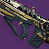 | 主武器 | 41.029 | 2.99 | 1.74 | 1.794 | 36.36% | 35.61 | 0.173 | 346.6 | 45 | 45 | 1.433 | 0.917 | 38 | 7.617 | 7.617 | 708 | 708 | 646 | 610 | 340 | 355 | 237 | 237 | 216 | 204 | ∞ | ∞ | 748 | 237 | D | 相比 C 级脉冲步枪舒适度较低，伤害开始显现颓势。 | ||||||||
| 轻质 | 主武器 | 31.949 | 2.98 | 1.74 | 1.596 | 36.36% | 31.41 | 0.130 | 461.3 | 42 | 45 | 1.083 | 0.967 | 88 | 5.333 | 5.723 | 733 | 733 | 641 | 624 | 391 | 364 | 246 | 246 | 215 | 209 | ∞ | ∞ | 770 | 246 | D | 情况与重型点射相同。 | |||||||||
| 手炮 | 动态热量 | 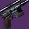 | 特殊 | 289.452 | 2.47 | 2.90 | 3.988 | 44 | 10.00% | ? | 0.348 | 172.4 | 10 | 20 | 2.183 | 2.050 | 95/140/100 | 3.133 | 6.614 | 2057 | 2057 | 1653 | 1347 | 338 | 1579 | 831 | 831 | 668 | 544 | 31500 | 12736 | 8591 | 3473 | 12 | 2097 | 831 | B | 清怪表现扎实，但精准倍率极高，弹药效率也不好。 | |||
| 动态热量 | 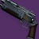 | 主武器 | 112.549 | 2.80 | 2.52 | 1.558 | 7.14% | ? | 0.349 | 172.1 | 14 | 26 | 2.250 | 2.067 | 81/100/80 | 4.533 | 8.717 | 903 | 903 | 759 | 650 | 417 | 586 | 323 | 323 | 271 | 232 | ∞ | ∞ | 923 | 323 | B | 射程更远，但伤害略逊于顶尖手枪；整体表现扎实。 | ||||||||
| 精密 | 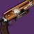 | 主武器 | 85.108 | 3.21 | 2.78 | 1.558 | 46.15% | 29.26 | 0.348 | 172.3 | 19 | 19 | 1.950 | 1.533 | 51 | 6.267 | 6.267 | 784 | 784 | 665 | 632 | 405 | 546 | 244 | 244 | 207 | 197 | ∞ | ∞ | 845 | 244 | B | 与「适配」非常接近。 | ||||||||
| 散射 | 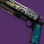 | 主武器 | 200.529 | 3.22 | 2.78 | 1.201 | 50.00% | ? | 0.602 | 99.6 | 9 | 12 | 2.017 | 1.550 | 45 | 4.817 | 6.623 | 1071 | 1071 | 947 | 850 | 707 | 734 | 333 | 333 | 294 | 264 | ∞ | ∞ | 1144 | 333 | B | 主手武器中伤害最突出的类型，但使用起来略显笨重，且受限于射程。 | ||||||||
| 适配 | 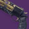 | 主武器 | 96.244 | 3.21 | 2.78 | 1.793 | 27.27% | 29.40 | 0.433 | 138.5 | 14 | 14 | 1.633 | 1.583 | 71 | 5.633 | 5.633 | 713 | 713 | 599 | 595 | 332 | 515 | 222 | 222 | 187 | 185 | ∞ | ∞ | 783 | 222 | C | 射程档位接近适配自动步枪，不需要「自动填装器」式的预热递增，手感不同。 | ||||||||
| 重型点射 | 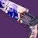 | 主武器 | 63.699 | 3.21 | 2.78 | 2.199 | 50.00% | 31.56 | 0.227 | 263.9 | 26 | 26 | 2.100 | 1.600 | 36 | 5.683 | 5.683 | 899 | 899 | 730 | 683 | 310 | 591 | 280 | 280 | 227 | 213 | ∞ | ∞ | 939 | 280 | C | 伤害不错，但基础属性偏低，且精准倍率高。 | ||||||||
| 攻击 | 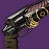 | 主武器 | 108.771 | 3.21 | 2.78 | 1.852 | 50.00% | 35.78 | 0.500 | 120.0 | 8 | 12 | 2.117 | 1.500 | 35 | 3.500 | 5.500 | 699 | 699 | 599 | 498 | 269 | 430 | 218 | 218 | 186 | 155 | ∞ | ∞ | 706 | 218 | F | 相比其他手炮表现明显弱势，固有 Perk 不足以弥补这一缺陷。 | ||||||||
| 冲锋枪 | 轻质 | 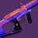 | 主武器 | 28.502 | 1.87 | 1.53 | 1.894 | 14.63% | 18.06 | 0.067 | 900.1 | 45 | 47 | 1.283 | 0.950 | 53 | 2.933 | 3.066 | 801 | 801 | 624 | 570 | 301 | 466 | 428 | 428 | 334 | 304 | ∞ | ∞ | 802 | 428 | C | 类似激进爆弹冲锋枪，但舒适度更高，伤害略低。 | |||||||
| 适配 | 主武器 | 27.044 | 1.86 | 1.52 | 1.652 | 15.79% | 18.33 | 0.067 | 894.5 | 42 | 44 | 1.083 | 1.017 | 79 | 2.750 | 2.884 | 748 | 748 | 566 | 550 | 333 | 451 | 403 | 403 | 305 | 296 | ∞ | ∞ | 762 | 403 | D | 相比精密自动步枪是纯粹的下位替代。 | |||||||||
| 攻击 | 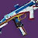 | 主武器 | 33.871 | 1.87 | 1.53 | 1.750 | 15.63% | 18.42 | 0.084 | 715.6 | 34 | 37 | 1.383 | 1.017 | 47 | 2.767 | 3.019 | 754 | 754 | 580 | 518 | 296 | 424 | 404 | 404 | 311 | 277 | ∞ | ∞ | 742 | 404 | D | 情况与「适配」相同。 | ||||||||
| 激进爆弹 | 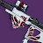 | 主武器 | 37.384 | 1.86 | 1.52 | 1.752 | 14.29% | ? | 0.099 | 604.8 | 64 | 64 | 1.633 | 0.983 | 36 | 6.250 | 6.250 | 702 | 702 | 616 | 565 | 323 | 463 | 377 | 377 | 331 | 304 | ∞ | ∞ | 749 | 377 | D | 射程档位类似长射程手枪，但没有自带反屏障。 | ||||||||
| 平衡热量 | 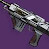 | 主武器 | 32.744 | 1.61 | 1.38 | 1.893 | 12.50% | ? | 0.067 | 896.0 | 56 | 63 | 2.383 | 1.950 | 52/18/20 | 3.683 | 4.152 | 790 | 790 | 546 | 488 | 258 | 416 | 489 | 489 | 338 | 302 | ∞ | ∞ | 743 | 489 | D | 情况与「适配」相同。 | ||||||||
| 精密 | 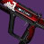 | 主武器 | 37.914 | 1.86 | 1.52 | 1.598 | 16.67% | 19.79 | 0.101 | 596.9 | 34 | 35 | 1.367 | 1.000 | 42 | 3.317 | 3.418 | 701 | 701 | 558 | 511 | 320 | 419 | 377 | 377 | 300 | 275 | ∞ | ∞ | 711 | 377 | D | 靠自带反屏障弥补了 冲锋枪中最差的伤害。 | ||||||||
| 手枪 | 微型导弹 | 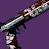 | 特殊 | 297.013 | 2.09 | 1.86 | 1.108 | 44 | 25.00% | 13.20 | 0.626 | 95.9 | 14 | 15 | 1.250 | 0.933 | 52 | 8.133 | 8.759 | 992 | 992 | 961 | 926 | 836 | 825 | 475 | 475 | 460 | 443 | 27313 | 13069 | 8070 | 3861 | 13 | 1166 | 475 | A | 明显被其他特殊武器超越，但仍拥有极高舒适度与优秀 PERK 协同。 | |||
| 适配 | 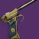 | 主武器 | 78.546 | 2.17 | 1.71 | 1.599 | 25.00% | 14.93 | 0.200 | 300.0 | 20 | 20 | 1.133 | 0.833 | 55 | 3.800 | 3.800 | 852 | 852 | 736 | 691 | 432 | 545 | 393 | 393 | 339 | 318 | ∞ | ∞ | 908 | 393 | B | 比适配点射略逊一筹，但自带反屏障，且在手感偏好上可能更受欢迎。 | ||||||||
| 适配点射 | 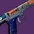 | 主武器 | 50.574 | 2.17 | 1.71 | 1.852 | 55.56% | 14.78 | 0.120 | 500.3 | 42 | 42 | 1.083 | 0.850 | 61 | 4.917 | 4.917 | 914 | 914 | 798 | 767 | 414 | 605 | 422 | 422 | 368 | 354 | ∞ | ∞ | 992 | 422 | B | 近距离主手武器中拥有优秀的整体伤害，此外还自带反屏障。 | ||||||||
| 动态热量 | 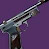 | 主武器 | 89.416 | 1.89 | 1.55 | 1.598 | 14.29% | ? | 0.167 | 359.9 | 14 | 34 | 1.850 | 1.517 | 66/90/90 | 2.167 | 5.501 | 1013 | 1013 | 818 | 589 | 368 | 484 | 536 | 536 | 433 | 312 | ∞ | ∞ | 922 | 536 | B | 相比其他主手武器拥有核弹级单弹匣 DPS，适合搭配超能充能。 | ||||||||
| 速射 | 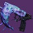 | 主武器 | 54.551 | 2.17 | 1.71 | 1.598 | 17.65% | 14.16 | 0.133 | 450.1 | 20 | 20 | 0.850 | 0.850 | 72 | 2.533 | 2.533 | 886 | 886 | 698 | 698 | 437 | 551 | 409 | 409 | 323 | 323 | ∞ | ∞ | 930 | 409 | B | 伤害不错，类似没有 DHL 的动态热量，同样适合超能充能。 | ||||||||
| 重型点射 | 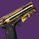 | 主武器 | 67.609 | 2.17 | 1.71 | 1.599 | 33.33% | 15.50 | 0.181 | 331.4 | 30 | 32 | 1.200 | 0.900 | 49 | 5.250 | 5.612 | 810 | 810 | 721 | 682 | 427 | 538 | 373 | 373 | 332 | 314 | ∞ | ∞ | 881 | 373 | C | 相比适配点射是纯粹的下位替代。 | ||||||||
| 轻质 | 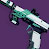 | 主武器 | 67.609 | 2.17 | 1.71 | 1.599 | 28.57% | 14.50 | 0.167 | 360.0 | 19 | 19 | 1.167 | 0.883 | 50 | 3.000 | 3.000 | 880 | 880 | 718 | 669 | 418 | 527 | 406 | 406 | 331 | 308 | ∞ | ∞ | 906 | 406 | C | 伤害类似「适配」，但缺少自带反屏障。 | ||||||||
| 精密 | 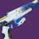 | 主武器 | 87.229 | 2.17 | 1.71 | 1.597 | 33.33% | 16.22 | 0.233 | 257.1 | 15 | 16 | 1.167 | 0.800 | 46 | 3.267 | 3.500 | 811 | 811 | 704 | 640 | 401 | 504 | 374 | 374 | 325 | 295 | ∞ | ∞ | 852 | 374 | C | 相比「适配」是纯粹的下位替代。 | ||||||||
| 弓箭 | 高冲击重型弩弹 | 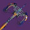 | 威能 | 1916.838 | 1.20 | 1.01 | 1.343 | 10 | 2.093 | 0.883 | 28.7 | 10 | 10 | 2.093 | 2.083 | 95 | 18.833 | 18.750 | 1097 | 2599 | 1102 | 1097 | 817 | 925 | 916 | 2171 | 920 | 916 | 22949 | 19168 | 6885 | 5751 | 3 | 1660 | 2714 | A | 缺少「干扰」狙击枪的多功能性与手感舒适度，但理论上限高于火箭发射器。 | ||||
| 精密 | 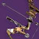 | 主武器 | 213.837 | 3.12 | 2.18 | 1.304 | 1.167 | 1.083 | 51.4 | 1 | 1 | 0.000 | 0.000 | 53/556 | 1.167 | 1.117 | 571 | 616 | 597 | 571 | 438 | 400 | 183 | 197 | 191 | 183 | ∞ | ∞ | 906 | 183 | B | 无限射程、自带反屏障、神器支援极佳，且与「击杀-换弹」类 PERK 有极佳协同。 | |||||||||
| 轻质 | 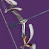 | 主武器 | 208.696 | 3.12 | 2.18 | 1.597 | 1.117 | 1.083 | 53.7 | 1 | 1 | 0.000 | 0.000 | 73/500 | 1.117 | 1.117 | 583 | 601 | 583 | 583 | 365 | 408 | 187 | 193 | 187 | 187 | ∞ | ∞ | 924 | 187 | C | 浪费了蓄力时间的下限优势，使用手感比「精密」稍显怪异，且没有自带反屏障。 | |||||||||
| 高冲击力长弓 | 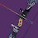 | 主武器 | 256.484 | 3.12 | 2.18 | 1.303 | 1.517 | 1.383 | 39.6 | 1 | 1 | 0.000 | 0.000 | 46/650 | 1.517 | 1.483 | 527 | 579 | 540 | 527 | 405 | 369 | 169 | 185 | 173 | 169 | ∞ | ∞ | 837 | 169 | D | 起手蓄力时间要求非常明显，不过自带硬直效果不错。 | |||||||||
| 特殊武器 | |||||||||||||||||||||||||||||||||||||||||
| 霰弹枪 | 速射打身体 | 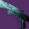 | 特殊 | 537.702 | 1.39 | 1.50 | 1.107 | 26 | 14.29% | 4.77 | 0.436 | 137.7 | 8 | 8 | 3.167 | 2.600 | 73 | 3.050 | 3.050 | 1717 | 1717 | 1059 | 963 | 870 | 1040 | 1234 | 1234 | 761 | 692 | 19450 | 13980 | 6733 | 4839 | 9 | 1600 | 1234 | A | 适合各类近战战术且舒适度最高的框架，同时拥有最高单弹匣 DPS。 | |||
| 攻击打身体、突击弹匣 | 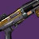 | 特殊 | 1009.738 | 1.60 | 1.73 | 1.108 | 18 | 50.00% | 4.62 | 1.000 | 60.0 | 5 | 6 | 3.150 | 2.434 | 36 | 4.000 | 5.000 | 1616 | 1616 | 1304 | 1130 | 1020 | 1220 | 1010 | 1010 | 815 | 706 | 29083 | 18175 | 11310 | 7068 | 7 | 1678 | 1010 | B | 相比顶尖霰弹枪框架 DPS 略低，但总伤害弥补了这一点。 | ||||
| 重型点射 | 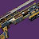 | 特殊 | 484.537 | 1.39 | 1.50 | 1.755 | 36 | 33.33% | 7.60 | 0.400 | 150.0 | 16 | 16 | 6.483 | 5.550 | 80 | 6.000 | 6.000 | 1685 | 1685 | 934 | 864 | 492 | 933 | 1211 | 1211 | 671 | 621 | 24270 | 17443 | 8090 | 5814 | 12 | 1508 | 1211 | B | 持续输出/总伤害组合最佳的霰弹枪框架，只是没有速射框架那么灵活。 | ||||
| 轻质打身体、突击弹匣 | 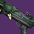 | 特殊 | 794.634 | 1.39 | 1.50 | 1.108 | 18 | 33.33% | 5.06 | 0.650 | 92.3 | 8 | 8 | 3.633 | 3.083 | 76 | 4.550 | 4.550 | 1701 | 1701 | 1159 | 1081 | 975 | 1167 | 1223 | 1223 | 833 | 777 | 19900 | 14303 | 7739 | 5562 | 7 | 1683 | 1223 | B | 由于备弹数量问题，相比速射框架是纯粹的下位替代，其他方面基本相同。 | ||||
| 速射独头弹 | 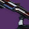 | 特殊 | 748.582 | 1.39 | 1.50 | 1.755 | 25 | 14.29% | ? | 0.633 | 94.7 | 8 | 8 | 3.433 | 3.000 | 82 | 4.433 | 4.433 | 1644 | 1644 | 1121 | 1059 | 603 | 1144 | 1182 | 1182 | 806 | 761 | 26034 | 18715 | 9372 | 6737 | 9 | 1638 | 1182 | C | 相比重型点射是纯粹的下位替代。 | ||||
| 精密打身体、突击弹匣 | 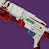 | 特殊 | 829.847 | 1.60 | 1.44 | 1.108 | 19 | 40.00% | 5.68 | 0.833 | 72.0 | 6 | 7 | 3.250 | 2.750 | 57 | 4.167 | 5.000 | 1593 | 1593 | 1199 | 1074 | 969 | 967 | 996 | 996 | 750 | 671 | 25227 | 15767 | 9294 | 5809 | 7 | 1575 | 996 | D | 没有「攻击」框架那样的总伤害优势，且 DPS 更低。 | ||||
| 精确重击突击弹匣 | 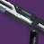 | 特殊 | 782.457 | 1.45 | 1.57 | 1.755 | 19 | 33.33% | 9.33 | 0.829 | 72.4 | 8 | 8 | 4.250 | 2.983 | 50 | 5.800 | 5.800 | 1374 | 1374 | 1037 | 906 | 516 | 978 | 944 | 944 | 713 | 623 | 21623 | 14867 | 7966 | 5477 | 7 | 1384 | 944 | F | 无论 DPS、单发伤害还是总伤害，都低于对应打身体的精密弹丸霰弹枪。 | ||||
| 狙击步枪 | 干扰 | 威能 | 1984.506 | 3.44 | 2.36 | 2.755 | 20 | 1.700 | 1.000 | 35.3 | 1 | 1 | 0.000 | 0.000 | 42 | 1.700 | 1.450 | 4014 | 6824 | 4706 | 4014 | 1457 | 2754 | 1167 | 1985 | 1369 | 1167 | 136487 | 39690 | 40946 | 11907 | 6 | 5408 | 2282 | S | DPS 可能不是职业顶尖，但应对机制的多功能性极强，接近登顶。 | |||||
| 动态热量 | 特殊 | 674.178 | 3.29 | 2.26 | 3.440 | 26 | 0.00% | 0.434 | 138.4 | 3 | 7 | 2.033 | 2.017 | 88/560/290 | 0.867 | 2.601 | 5115 | 5115 | 3361 | 2294 | 667 | 1574 | 1555 | 1555 | 1022 | 697 | 57652 | 17529 | 19957 | 6068 | 9 | 4713 | 1788 | A | 受限于默认较小的弹匣，但单发伤害高得离谱。 | ||||||
| 高冲击 | 特殊 | 1028.960 | 3.29 | 2.26 | 2.755 | 48 | 25.00% | 1.667 | 1.067 | 36.0 | 11 | 11 | 2.733 | 2.233 | 36 | 16.667 | 16.667 | 2031 | 3172 | 1970 | 1919 | 697 | 1316 | 617 | 964 | 599 | 583 | 162456 | 49390 | 54152 | 16463 | 16 | 2650 | 1109 | A | 面对有精准要害机制的目标时表现极佳，总伤害极其夸张，更适合发挥双重伤害 PERK 的场景。 | |||||
| 适配 | 特殊 | 658.450 | 3.29 | 2.26 | 3.244 | 24 | 50.00% | 0.667 | 90.0 | 7 | 7 | 1.733 | 1.733 | 49 | 4.000 | 4.000 | 3249 | 3249 | 2645 | 2645 | 815 | 1814 | 988 | 988 | 804 | 804 | 51982 | 15803 | 19493 | 5926 | 9 | 3910 | 1136 | B | 伤害几乎和速射完全一致，但额外自带反屏障。 | ||||||
| 攻击 | 特殊 | 832.363 | 3.50 | 2.40 | 3.497 | 20 | 33.33% | 0.829 | 72.4 | 5 | 4 | 2.350 | 1.950 | 32 | 3.317 | 2.488 | 3508 | 3508 | 2622 | 2567 | 734 | 1761 | 1004 | 1004 | 750 | 734 | 58182 | 16647 | 20364 | 5827 | 7 | 3999 | 1154 | B | 缺少「事不过四」限制了其上限，但「动能合成」弥补了这一点。 | ||||||
| 速射 | 特殊 | 449.452 | 3.49 | 2.39 | 3.440 | 31 | 16.67% | 0.436 | 137.6 | 7 | 7 | 1.800 | 1.733 | 70 | 2.617 | 2.617 | 3597 | 3597 | 2525 | 2486 | 723 | 1705 | 1030 | 1030 | 723 | 712 | 48637 | 13933 | 17258 | 4944 | 11 | 3988 | 1185 | B | 经典 DPS 狙击框架，实战表现其实并没有比动态热量差多少。 | ||||||
| 融合步枪 | 高冲击加速线圈 | 特殊 | 1238.563 | 1.39 | 1.56 | 25 | 40.00% | 16.63 | 1.442 | 1.404 | 41.6 | 5 | 7 | 2.817 | 2.033 | 21/903 | 5.767 | 8.651 | 1196 | 1228 | 1130 | 1004 | 1004 | 1125 | 859 | 882 | 812 | 721 | 43100 | 30964 | 13792 | 9909 | 8 | 1381 | 859 | C | 打身体+远距离舒适 DPS 的最佳代表，是融合步枪中的巨大提升。 | ||||
| 精密加速线圈 | 特殊 | 1020.491 | 1.39 | 1.56 | 23 | 33.33% | 17.21 | 1.254 | 1.225 | 47.8 | 5 | 8 | 2.450 | 1.967 | 37/737 | 5.017 | 8.780 | 1133 | 1160 | 1058 | 951 | 951 | 1065 | 814 | 833 | 760 | 683 | 32675 | 23471 | 11365 | 8164 | 8 | 1308 | 814 | D | 只有在相较于高冲击更追求较低充能时间时才有价值。 | |||||
| 适配加速线圈 | 特殊 | 893.459 | 1.39 | 1.56 | 23 | 33.33% | 16.00 | 1.129 | 1.097 | 53.1 | 5 | 8 | 2.317 | 1.900 | 37/613 | 4.517 | 7.567 | 1102 | 1135 | 1052 | 911 | 911 | 1019 | 791 | 815 | 755 | 654 | 28633 | 20550 | 7469 | 5361 | 6 | 1261 | 791 | F | 相比「精密」纯粹是下位替代。 | |||||
| 攻击加速线圈 | 特殊 | 874.707 | 1.60 | 1.79 | 23 | 33.33% | 15.68 | 1.100 | 1.063 | 54.5 | 5 | 8 | 2.333 | 1.833 | 40/633 | 4.400 | 7.700 | 1270 | 1314 | 1173 | 1038 | 1038 | 1164 | 795 | 823 | 734 | 650 | 32139 | 20118 | 11179 | 6998 | 8 | 1445 | 795 | F | 相比「精密」纯粹是下位替代。 | |||||
| 速射加速线圈 | 特殊 | 803.025 | 1.39 | 1.56 | 22 | 14.29% | 15.05 | 0.989 | 0.956 | 60.7 | 7 | 8 | 2.100 | 1.767 | 49/500 | 5.933 | 6.922 | 1131 | 1171 | 1030 | 975 | 975 | 1091 | 812 | 840 | 739 | 700 | 24613 | 17667 | 7832 | 5621 | 7 | 1326 | 812 | F | 相比「精密」纯粹是下位替代。 | |||||
| 后膛榴弹 | 区域拒止 | 特殊 | 1136.938 | 1.25 | 1.25 | 20 | 6.000 | 1 | 1 | 0.000 | 0.000 | 80 | 6.000 | 6.000 | 237 | 237 | 237 | 237 | 237 | 238 | 189 | 189 | 189 | 189 | 28387 | 22739 | 9936 | 7959 | 7 | 296 | 189 | A | 命中触发协同极佳，清怪溅射优秀，弹药效率高，具备不错的 首领切枪输出潜力。 | ||||||||
| 微型导弹尖刺榴弹 | 特殊 | 852.930 | 1.25 | 1.26 | 20 | 1.650 | 0.667 | 36.4 | 1 | 1 | 0.000 | 0.000 | 68 | 1.650 | 1.567 | 646 | 1598 | 680 | 646 | 646 | 651 | 517 | 1279 | 544 | 517 | 21321 | 17059 | 7462 | 5971 | 7 | 809 | 1279 | A | 必备的移动工具，切枪伤害也不算差。 | |||||||
| 波形 | 特殊 | 461.248 | 1.25 | 1.26 | 20 | 1.500 | 0.684 | 40.0 | 1 | 1 | 0.000 | 0.000 | 75 | 1.500 | 1.583 | 384 | 843 | 364 | 384 | 384 | 387 | 307 | 675 | 291 | 307 | 11530 | 9225 | 4035 | 3229 | 7 | 481 | 675 | B | 在几乎所有内容中效率都低于「区域拒止」，但依然具有相当可观的杀伤力。 | |||||||
| 双重火力尖刺榴弹 | 特殊 | 839.622 | 1.25 | 1.26 | 20 | 1.883 | 0.667 | 31.9 | 1 | 1 | 0.000 | 0.000 | 41 | 1.883 | 1.517 | 557 | 1574 | 692 | 557 | 557 | 561 | 446 | 1259 | 553 | 446 | 20991 | 16792 | 7347 | 5877 | 7 | 698 | 1259 | C | 理论上是最佳致盲框架，但在当前环境下相比「微型导弹」存在感并不高。 | |||||||
| 轻质尖刺榴弹 | 特殊 | 629.112 | 1.25 | 1.26 | 20 | 1.650 | 0.667 | 36.4 | 1 | 1 | 0.000 | 0.000 | 67 | 1.650 | 1.517 | 477 | 1179 | 519 | 477 | 477 | 480 | 381 | 943 | 415 | 381 | 15734 | 12582 | 5507 | 4404 | 7 | 597 | 943 | D | 作为高舒适度的致盲工具有一定用途，但伤害已经非常过时。 | |||||||
| 追踪步枪 | 适配 | 特殊 | 28.634 | 1.82 | 1.96 | 1.342 | 520 | 7.14% | 35.54 | 0.067 | 897.9 | 104 | 105 | 1.250 | 1.150 | 60 | 6.883 | 6.950 | 780 | 780 | 676 | 667 | 497 | 717 | 428 | 428 | 371 | 366 | 27115 | 14890 | 10533 | 5784 | 202 | 1354 | 643 | A | 在依赖射击次数的场景中实用性极高，「严酷折射」使其伤害更适合 PvP/多人竞技环境。 | ||||
| 偃月 | 适配 | 特殊 | 482.420 | 1.50 | 1.20 | 33 | 14.29% | 18.00 | 0.908 | 66.1 | 7 | 8 | 1.650 | 1.200 | 55 | 5.450 | 6.358 | 797 | 797 | 766 | 714 | 714 | 571 | 531 | 531 | 511 | 476 | 23885 | 15920 | 9409 | 6271 | 13 | 898 | 531 | B | 自带反屏障很不错，整体伤害虽逊于「攻击」，但依然实现了相同的存在目的。 | |||||
| 攻击 | 特殊 | 553.800 | 1.61 | 1.29 | 34 | 20.00% | 18.88 | 1.003 | 59.8 | 6 | 6 | 1.817 | 1.150 | 32 | 5.017 | 5.017 | 889 | 889 | 868 | 783 | 783 | 627 | 552 | 552 | 539 | 486 | 30326 | 18829 | 11595 | 7199 | 13 | 993 | 552 | B | 理论上拥有最佳偃月伤害，但实际用途与其他偃月类似，神器支援优秀。 | ||||||
| 速射 | 特殊 | 420.416 | 1.50 | 1.20 | 33 | 14.29% | 17.84 | 0.714 | 84.1 | 7 | 8 | 1.100 | 0.950 | 63 | 4.283 | 4.997 | 883 | 883 | 848 | 820 | 820 | 656 | 589 | 589 | 566 | 547 | 20801 | 13874 | 8194 | 5465 | 13 | 1015 | 589 | B | 相比「攻击」总伤害明显下降，但还不足以让它降到更低梯队。 | ||||||
| 近战 | 特殊 | 429.627 | 2.00 | 2.00 | 1.611 | 1.433 | 37.2 | 532 | 598 | 532 | 532 | 532 | 532 | 267 | 300 | 267 | 267 | ∞ | ∞ | 1230 | 493 | 不适用 / 无数据。 | |||||||||||||||||||
| 威能武器 | |||||||||||||||||||||||||||||||||||||||||
| 机枪 | 适配 | 威能 | 100.202 | 2.03 | 1.63 | 1.401 | 379 | 31.58% | 47.67 | 0.134 | 449.3 | 75 | 75 | 3.567 | 2.833 | 59 | 9.883 | 9.883 | 1524 | 1524 | 1201 | 1135 | 810 | 910 | 750 | 750 | 591 | 559 | 77151 | 37977 | 15064 | 7415 | 74 | 1557 | 750 | B | 理论上是「攻击」伤害的纯下位替代，但自带反屏障效果很明显。 | ||||
| 攻击 | 威能 | 80.869 | 2.03 | 1.63 | 1.304 | 458 | 32.81% | 47.21 | 0.100 | 600.0 | 91 | 85 | 3.683 | 2.750 | 47 | 9.000 | 8.400 | 1643 | 1643 | 1252 | 1179 | 904 | 943 | 809 | 809 | 616 | 580 | 75233 | 37038 | 14784 | 7278 | 90 | 1646 | 809 | B | 机枪中 DPS 和总伤害平衡最佳，自带硬直属性也很好。 | |||||
| 平衡热量 | 威能 | 57.308 | 2.03 | 1.62 | 1.304 | 575 | 9.90% | ? | 0.066 | 906.8 | 101 | 111 | 4.367 | 2.117 | 59/10/10 | 6.617 | 7.350 | 1756 | 1756 | 1363 | 1069 | 820 | 856 | 866 | 866 | 672 | 527 | 66830 | 32952 | 16620 | 8195 | 143 | 1626 | 866 | B | 拥有最高单弹匣爆发潜力，基本可以看作高舒适度的速射版本。 | |||||
| 高冲击 | 威能 | 117.873 | 2.03 | 1.63 | 1.440 | 376 | 40.91% | 47.85 | 0.167 | 359.4 | 66 | 62 | 3.767 | 2.817 | 41 | 10.850 | 10.182 | 1435 | 1435 | 1142 | 1082 | 751 | 866 | 706 | 706 | 562 | 532 | 90066 | 44320 | 17965 | 8840 | 75 | 1475 | 706 | B | 在保持较高 DPS 的同时拥有最高总伤害，并且自带硬直属性。 | |||||
| 速射 | 威能 | 57.308 | 2.04 | 1.63 | 1.304 | 579 | 37.33% | 46.42 | 0.067 | 898.0 | 110 | 103 | 2.800 | 2.250 | 59 | 7.283 | 6.815 | 1749 | 1749 | 1327 | 1275 | 977 | 1019 | 858 | 858 | 651 | 625 | 67646 | 33181 | 13436 | 6590 | 115 | 1766 | 858 | C | 伤害不错，但总伤害平庸，且拥有所有机枪框架中最差的后坐力。 | |||||
| 火箭发射器 | 适配集群猎人 | 威能 | 2549.565 | 1.27 | 1.06 | 9 | 2.383 | 1.183 | 25.2 | 1 | 1 | 0.000 | 0.000 | 47 | 2.383 | 2.183 | 1360 | 2740 | 1485 | 1360 | 1360 | 1134 | 1070 | 2155 | 1168 | 1070 | 50666 | 22946 | 9725 | 7649 | 3 | 1890 | 2478 | A | 纯单弹匣倾泻爆发略逊于「攻击」，但差距并不大。 | ||||||
| 攻击集群猎人 | 威能 | 2549.565 | 1.27 | 1.06 | 9 | 2.200 | 1.100 | 27.3 | 1 | 1 | 0.000 | 0.000 | 75 | 2.200 | 2.183 | 1473 | 2947 | 1485 | 1473 | 1473 | 1228 | 1159 | 2318 | 1168 | 1159 | 50666 | 22946 | 9725 | 7649 | 3 | 2047 | 2665 | A | 切枪 DPS 极高，但需要加拉尔号角配合；游荡清怪中神器支援很好，但用途较单一。 | |||||||
| 高冲击集群猎人 | 威能 | 2364.585 | 1.27 | 1.06 | 11 | 2.500 | 1.283 | 24.0 | 1 | 1 | 0.000 | 0.000 | 36 | 2.500 | 2.183 | 1201 | 2341 | 1376 | 1201 | 1201 | 1001 | 946 | 1843 | 1083 | 946 | 57407 | 26010 | 9011 | 7094 | 3 | 1669 | 2119 | B | 相比 A 级火箭发射器多出的总伤害并没有实际收益，不过可能更适合游荡清怪。 | |||||||
| 精密集群猎人 | 威能 | 2271.937 | 1.27 | 1.06 | 11 | 2.483 | 1.400 | 24.2 | 1 | 1 | 0.000 | 0.000 | 38 | 2.483 | 2.150 | 1163 | 2063 | 1343 | 1163 | 1163 | 969 | 915 | 1623 | 1057 | 915 | 55173 | 24991 | 8663 | 6816 | 3 | 1616 | 1866 | C | 由于射速和单发伤害问题，相比其他火箭发射器伤害明显下降。 | |||||||
| 线性融合步枪 | 精密 | 威能 | 1214.229 | 1.25 | 1.19 | 3.441 | 30 | 16.67% | 0.979 | 0.946 | 61.3 | 5 | 7 | 2.217 | 1.650 | 28 | 3.917 | 5.876 | 1554 | 1609 | 1416 | 1241 | 361 | 1174 | 1240 | 1284 | 1129 | 990 | 45657 | 36427 | 10653 | 8500 | 7 | 1691 | 1240 | B | 总伤害非常突出；单人挑战中表现亮眼，因为不像 A499 那样依赖换弹/「神性」，且能吃到粒子解构收益。 | ||||
| 适配点射 | 威能 | 1574.704 | 1.25 | 1.19 | 3.437 | 21 | 16.67% | 1.379 | 1.350 | 43.5 | 5 | 7 | 2.137 | 1.587 | 28 | 5.517 | 8.276 | 1431 | 1462 | 1401 | 1290 | 375 | 1220 | 1142 | 1166 | 1118 | 1029 | 41456 | 33069 | 9870 | 7874 | 5 | 1665 | 1142 | D | DPS 甚至低于中上水平的特殊武器，且无法获得弹药回归类 Perk。 | |||||
| 弹鼓榴弹 | 适配尖刺榴弹 | 威能 | 821.818 | 1.61 | 1.16 | 26 | 40.00% | 0.503 | 119.3 | 7 | 8 | 2.333 | 2.067 | 52 | 3.017 | 3.520 | 2636 | 2636 | 1898 | 1734 | 1734 | 1247 | 1634 | 1634 | 1177 | 1075 | 34457 | 21367 | 6626 | 4109 | 5 | 2496 | 1634 | C | 类似速射框架，只是 DPS 稍低，总伤害略高。 | ||||||
| 压缩波形 | 威能 | 804.427 | 1.61 | 1.16 | 26 | 40.00% | 0.508 | 118.1 | 5 | 7 | 2.333 | 2.067 | 55 | 2.033 | 3.050 | 2553 | 2553 | 1775 | 1486 | 1486 | 1068 | 1583 | 1583 | 1101 | 921 | 33740 | 20915 | 6489 | 4022 | 5 | 2287 | 1583 | C | 由于弹药经济较差，其清怪多功能性被略微高估，但伤害意外地还不错。 | |||||||
| 速射尖刺榴弹 | 威能 | 702.925 | 1.61 | 1.16 | 30 | 33.33% | 0.403 | 148.9 | 7 | 7 | 2.100 | 1.983 | 30 | 2.417 | 2.417 | 2814 | 2814 | 1803 | 1757 | 1757 | 1262 | 1745 | 1745 | 1118 | 1089 | 34005 | 21088 | 5668 | 3515 | 5 | 2601 | 1745 | C | 相比其他主流威能选择，总伤害非常糟糕；DPS 尚可，但在当前沙盒中定位很局限。 | |||||||
| 刀剑 | 适配锯齿刀锋 + 伤害、集群猎人 | 威能 | 2318.463 | 1.56 | 1.23 | 64 | 12.70% | 1.775 | 2036 | 2036 | 2036 | 2036 | 2036 | 1606 | 1306 | 1306 | 1306 | 1306 | 46248 | 29676 | 11441 | 7342 | 19 | 2803 | 1502 | B | 「遗赠」实际上能与威能榴弹发射器抗衡，且拥有更好的伤害 PERK，是综合表现最佳的刀剑。 | ||||||||||||||
| 铸造锯齿刀锋 + 伤害、集群猎人 | 威能 | 2865.613 | 1.56 | 1.23 | 63 | 20.00% | 2.200 | 2028 | 2028 | 2028 | 2028 | 2028 | 1601 | 1303 | 1303 | 1303 | 1303 | 46838 | 30089 | 13382 | 8597 | 18 | 2792 | 1498 | B | 与命中伤害策略有着最佳协同，伤害也非常扎实。 | |||||||||||||||
| 轻质锯齿刀锋 + 伤害、集群猎人 | 威能 | 2610.592 | 1.56 | 1.23 | 80 | 10.53% | 2.042 | 1992 | 1992 | 1992 | 1992 | 1992 | 1573 | 1279 | 1279 | 1279 | 1279 | 65080 | 41769 | 17897 | 11487 | 22 | 2744 | 1471 | B | 弹药效率和经济性最佳，DPS 仅有小幅下降。 | |||||||||||||||
| 波形锯齿刀锋 + 伤害、集群猎人 | 威能 | 2316.712 | 1.56 | 1.23 | 63 | 12.70% | 1.800 | 2005 | 2005 | 2005 | 2005 | 2005 | 1582 | 1287 | 1287 | 1287 | 1287 | 56832 | 36488 | 11427 | 7336 | 19 | 2760 | 1480 | B | 相比其他 B 级刀剑，在没有明显损失 DPS 的情况下提升了总伤害。 | |||||||||||||||
| 攻击锯齿刀锋 + 伤害、集群猎人 | 威能 | 2924.522 | 1.56 | 1.23 | 51 | 13.73% | 2.417 | 1886 | 1886 | 1886 | 1886 | 1886 | 1489 | 1210 | 1210 | 1210 | 1210 | 58096 | 37288 | 13670 | 8774 | 15 | 2596 | 1392 | C | 相比其他框架 DPS 有明显下降，甚至总伤害也不是最高。 | |||||||||||||||
| 涡流锯齿刀锋 + 伤害、集群猎人 | 威能 | 2382.229 | 1.56 | 1.23 | 65 | 12.90% | 2.000 | 1855 | 1855 | 1855 | 1855 | 1855 | 1465 | 1191 | 1191 | 1191 | 1191 | 48234 | 30969 | 13357 | 8576 | 18 | 2555 | 1370 | D | 加强幅度不足；依旧属于总伤害最低的类型之一，DPS 也稳居垫底。 | |||||||||||||||
数值列
- 基础伤害
- 单发（或单个点射）打首领级目标、距离加成为 0 时的伤害。
- 精准倍率
- 命中要害的伤害倍率。
- 最大弹药
- 该框架能达到的最高备弹量，个别武器有例外。
- 弹匣 Perk
- 强化备用弹匣或强化热量生成带来的弹匣增量。
- 瞄准衰减射程
- 开始吃距离衰减前的最大距离，单位米。这一列略有过时，也缺少部分选项。
- 基础间隔
- 默认状态下两次射击之间的时间，单位秒。
- 优化间隔
- 弹匣溢出（如火箭）或吃到射速类模组（如充能速率）之后的射击间隔。
- 真实射速
- 按打空一个弹匣的实际耗时反推的每分钟射击数，点射类武器按首发到末发计。
- 测试弹匣
- 用来测射速的那把样本武器的弹匣容量。
- 优化弹匣
- 挂强化备用弹匣、不挂弹匣 Perk 时的实际弹匣容量。
- 基础填装
- 一个弹匣的末发到下一个弹匣首发之间的时间，按 100 武器属性加一个填装器模组计，单位秒。
- 优化填装
- 同一段时间改按月神步力场计。
- 填装数值
- 样本武器的填装数值；蓄力与热量类框架的这一格还带着斜杠后的附加数值（蓄力或拉弓的毫秒数、热量参数）。数据源没有给这一列单独命名，列名与解读是本站按数值走向推的，未经确认。
- 基础射空
- 一个弹匣从首发打到末发的时间，单位秒。
- 优化射空
- 同一段时间改按优化弹匣计。
- 最大弹药拾取
- 拾取一个弹药盒能补进的弹药数，按 200 武器属性加拾取模组计。
计算列
- 单弹匣红血 DPS
- 一个弹匣之内打红血的 DPS，不含填装。
- 最大红血 DPS
- 计入射速、弹匣溢出与模组之后的红血 DPS 上限。
- 月靴红血 DPS
- 填装按月神步力场取上限、并计入手动操作的红血 DPS。
- 典型红血 DPS
- 常规巡场中手动操作的红血 DPS。
- 身体红血 DPS
- 全程打身体、不吃精准倍率的红血 DPS。
- 典型橙血 DPS
- 典型口径下打橙血的 DPS。
- 单弹匣首领 DPS
- 一个弹匣之内打首领的 DPS。
- 最大首领 DPS
- 计入射速、弹匣溢出与模组之后的首领 DPS 上限。
- 月靴首领 DPS
- 填装按月神步力场取上限的首领 DPS。
- 典型首领 DPS
- 常规操作下的首领 DPS。
- 清怪分数
- 40% 的红血典型 DPS 加 40% 的红血单弹匣 DPS 加 20% 的橙血 DPS，再乘该类武器的神器模组倍率。倍率按武器类恒定：多数为 1.25，狙击步枪、刀剑与火箭发射器为 1.4375，自动步枪为 1.50，弓箭为 1.69，追踪步枪为 1.875。
- 首领分数
- 取该框架适用的那一列首领 DPS，同样计入神器模组倍率。
- 红血总伤
- 打空全部备弹能对红血造成的总伤害。
- 首领总伤
- 打空全部备弹能对首领造成的总伤害。
- 红血单弹药盒
- 拾取一个弹药盒能对红血打出的伤害。
- 首领单弹药盒
- 拾取一个弹药盒能对首领打出的伤害。
分析列
- 分级
- 综合评级，S 到 F 共七档，跨武器类型可比。
- 注解
- 对该框架的一句话评价。